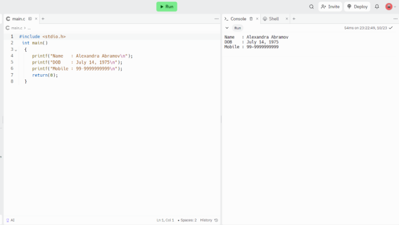
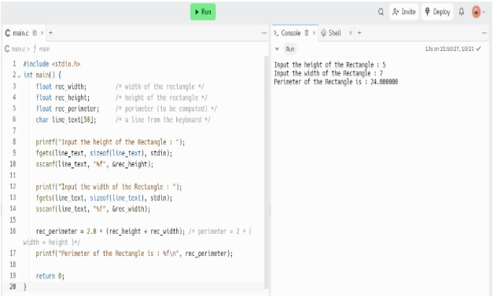
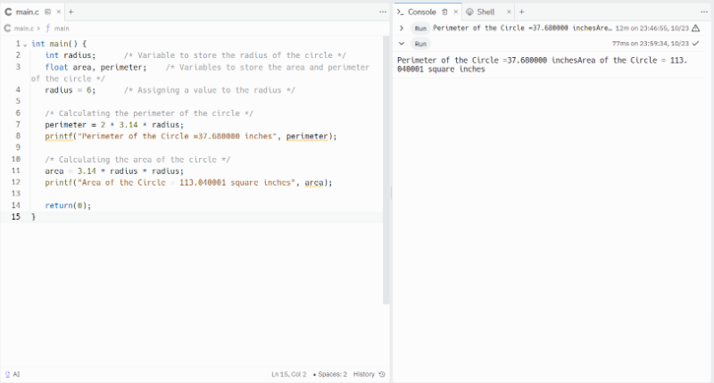
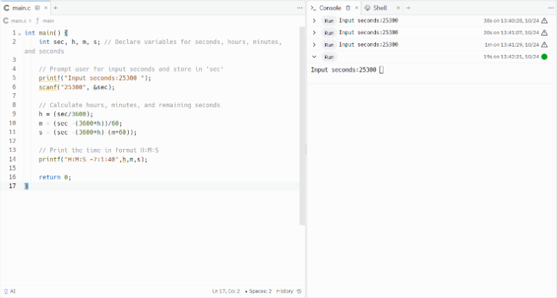
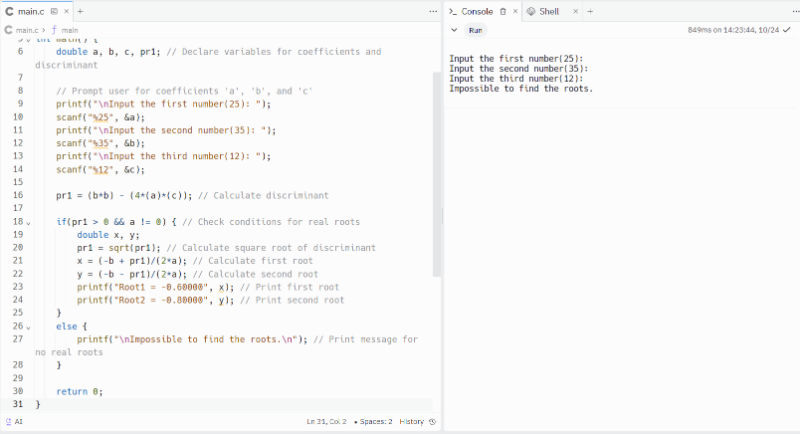
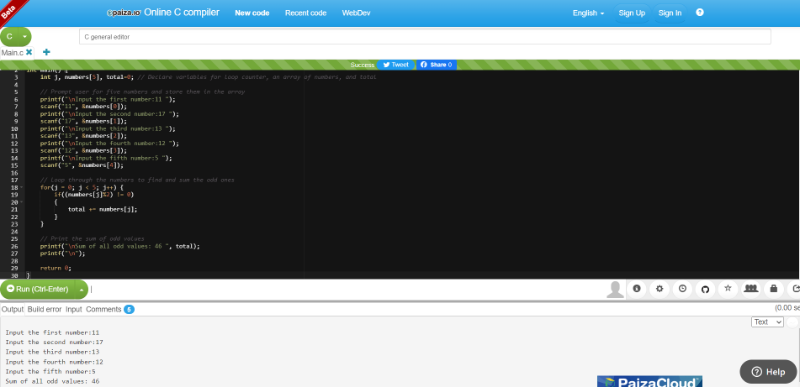
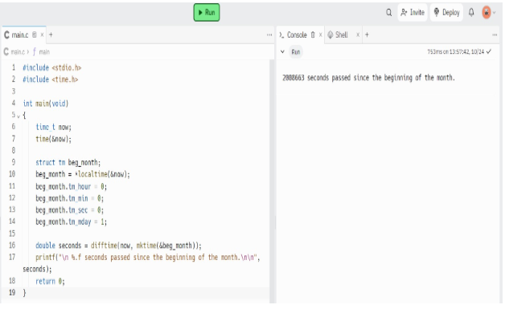
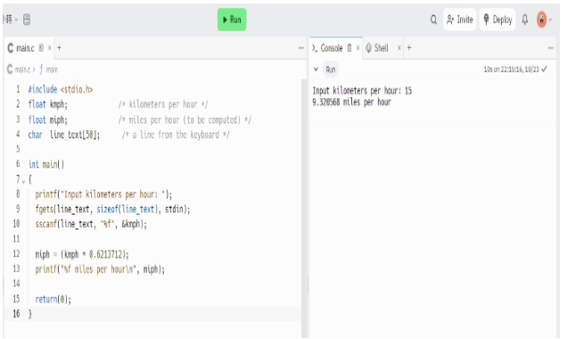
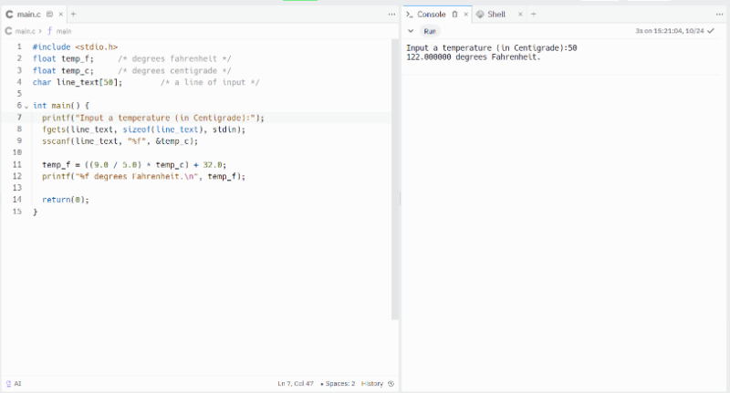
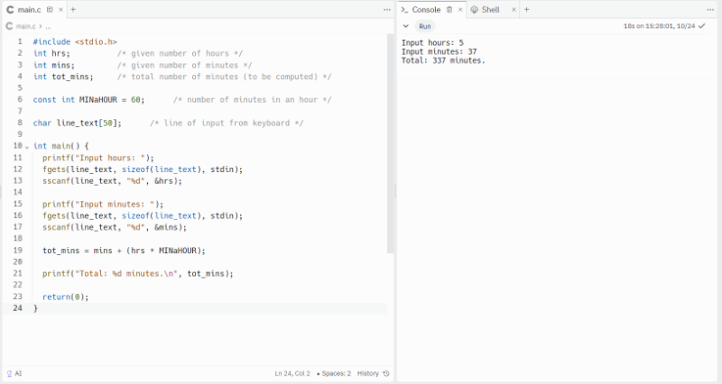

China <<
Previous Next >> C_ex
ANSIC
練習1
從 https://www.w3resource.com/c-programming-exercises/ 網頁中自選 10 個練習範例, 分別在 Replit, Windows 與 Linux (or macOS) 中執行後, 取下執行畫面放入個人的 Github Pages 網頁 (即帳號.github.io 網站), 以 ANSIC 作為頁面標題並詳細說明每一行的程式語法.
1.編寫一個 C 程式來列印您的姓名、出生日期和手機號碼。 預期輸出：
輸出程式.txt

2.寫一個 C 程式來計算高 7 英吋、寬 5 英吋的矩形的周長和麵積。
矩形程式.txt

3.寫一個 C 程式來計算給定半徑的圓的周長和面積。
計算給定半徑的圓的周長和面積.txt

4.寫一個 C 程式將給定整數（以秒為單位）轉換為小時、分鐘和秒。
轉換程式.txt

5.寫一個 C 程序，將給定的整數（以天為單位）轉換為年、月和日，假設所有月份都有 30 天，所有年份都有 365 天。
程式.txt

6.寫一個 C 程序，讀取 5 個數字並對它們之間的所有奇數求和。
奇數求和程式.txt

7.寫一個 C 程序，讀取兩個整數並檢查它們是否相乘。
秒數程式.txt

8.將公里每小時轉換為英哩每小時
公里轉換程式公里轉換程式.txt

9.寫一個將攝氏度轉換為華氏度的程式。
攝氏轉華氏度程式.txt

10.寫一個 C 程序，以小時和分鐘為輸入，併計算總分鐘數。
計算總分鐘數程式.txt

China <<
Previous Next >> C_ex